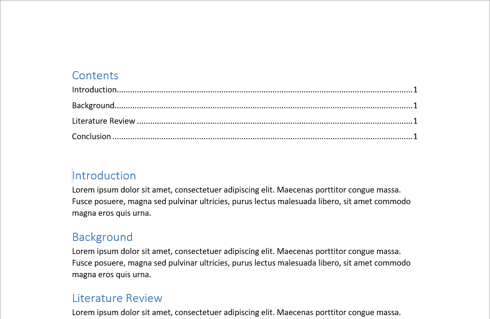

In the name of Allah, the Entirely Merciful, the Especially Merciful.
After proofreading a number of theses and articles, I’ve found that most
students in IIUM don’t know how to use (Microsoft Word) styles to add structure
to their documents. This short article will get you familiar with using Microsoft Word styles. We will be using Microsoft Word 2013 on Windows, however, this should also apply to Microsoft Word 2016.
Introduction
Document styles are a way to add semantic structure to your documents. This
provides several benefits:
Helps in automatically creating a ‘Table of Contents’, ‘List of Figures’, and
‘List of Tables’. You will also make no mistakes in numbering headings and
subheadings, given that all of them are defined properly.
Helps in editing several items of the same ‘style’ at once, which in turn
saves time and ensures that the formatting is applied throughout.
Enables one to easily export a Microsoft Word document to other formats, such
as EPUB for ebook readers.
Makes one more conscious of the document structure which in turn improves
one’s writing.
The options for ‘styles’ can be seen from the ‘HOME’ tab in the document window.
The default selection window is quite limited in that only a few styles are
shown at a time and not all styles are shown.
Styles section in Home tab of Microsoft Word
Styles Pane
However, you can open the dedicated Styles pane by pressing the small arrow on
the bottom right of the Styles section. The Styles pane lists all the styles
available for the current document.
Styles Pane arrow
After clicking the arrow, you will be presented with a separate Styles pane that
will list all styles used in the current document.
Styles Pane
New styles can be created and current styles can be edited by right-clicking a
listed style and clicking “Modify…”.
Modify Style dialog
Simple Example
Let’s try a simple example. Open a new document and write out a few paragraphs
along with a few headings.
Simple document
Now apply “Heading 1” styles to all your headings by highlighting your headings
one by one and then selecting the style “Heading 1” from the Styles pane. You
should have something as follows.
Simple document with "heading 1" styles
What Now?
Here are a few things you can try out immediately with your simple example
document.
Generating Table of Contents
To generate a “Table of Contents” for the document, head to the beginning of the
document, click on the “References” tab and select the “Table of Contents”
option. It is highlighted in the screenshot below.
Table of Contents option
Select a “Table of Contents” style and you should have something as follows.

Table of Contents Preview
Great things to note, page numbers can be automatically updated as you continue
writing your document, you do not have to manually input page numbers in
your “Table of Contents”. Similarly, all your headings, sub-headings, and sub-
sub-headings, are automatically detected and updated in the “Table of Contents”
as you write your document. Update of the “Table of Contents” is not live
though, so every time you want to update your “Table of Contents”, head over to
your “Table of Contents” and click on the “Update Table…” option. This can be
seen in the following screenshot.
Updating Table of Contents
Clicking on the option presents a dialog with two options, namely, “Update page
numbers only” and “Update entire table”. The former is good if no need headings
were added to your document since the last time the Table of Contents was
updated. The latter on the other hand should be used if new headings have been
added to your document.
Change document theme
Since your document is properly structured, changing themes is mostly a single-
click affair. To try out a few different themes/designs, head over to the
“Design” tab and try some of the different themes available. The simple example
document is shown below with a different theme than the default.
Simple Example with different theme
Conclusion
I hope this short article is enough for introducing the concept of document
styles in Microsoft Word and that you can make good use of them in your future
documents. I’m still working on the comment system, so if you have any
suggestions or comments, please send them directly to my GitHub account.